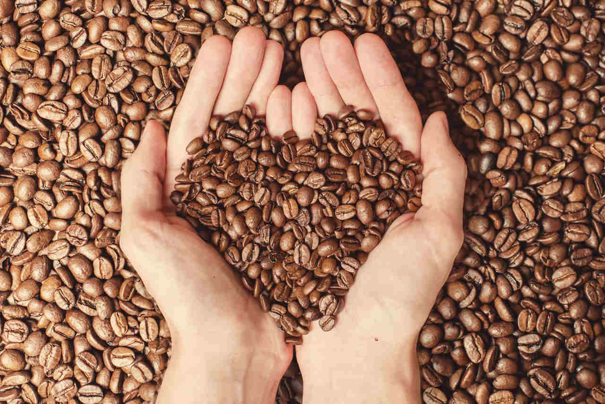
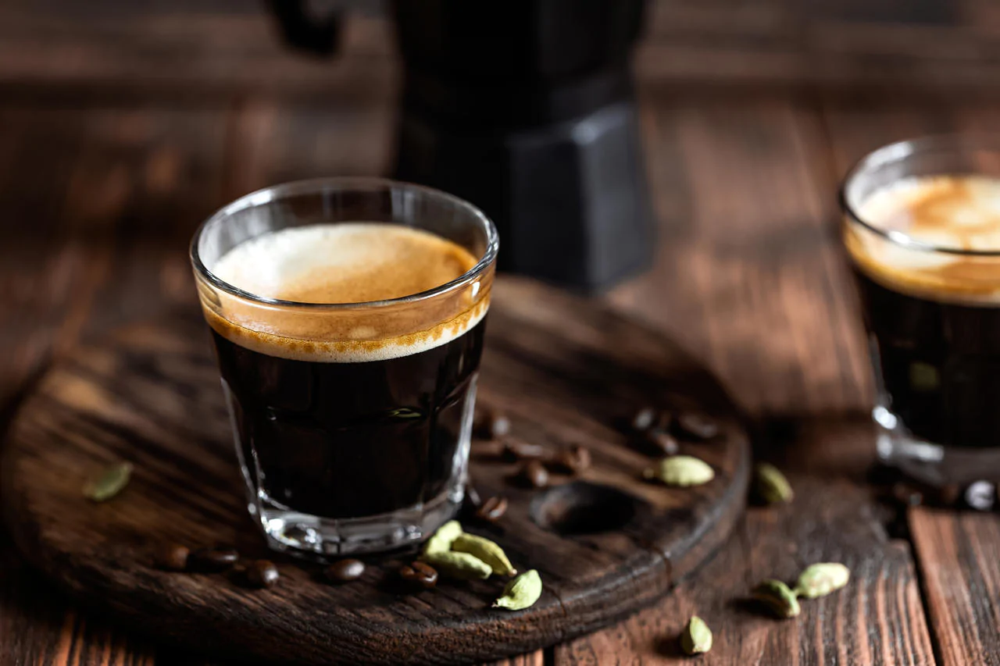
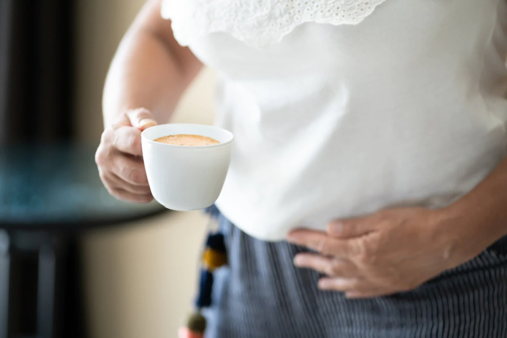
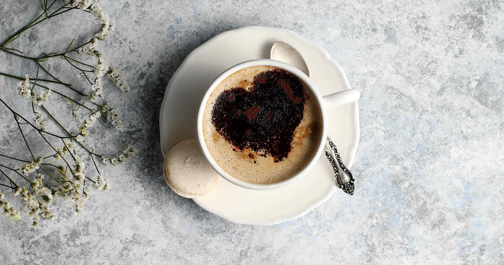

Kahvenin Mutlaka Bilinmesi Gereken 12 Faydası
Sütlü ya da sade, güne bir kupa lezzetli bir kahve içerek mükemmel bir başlangıç yapmayı tercih edenlerin sayısı oldukça fazladır. Lezzeti ve güzel kokusu ile motivasyonu artıran kahvenin yararları ise saymakla bitmeyecek kadar fazladır.
O halde gelin; espresso, filtre kahve, Türk kahvesi gibi farklı demleme ve çekirdek türüne göre birçok türü olan kahvenin faydaları nelermiş, birlikte göz atalım.
Kahvenin Yararları Nelerdir?

Özellikle yoğun iş temposunda zinde kalabilmek için çoğu insanın severek tükettiği kahvenin hem psikolojik hem de fiziksel anlamda birçok faydası vardır. Kahve, içindeki kafein sebebiyle uyandırıcı bir etkiye sahip bir içecek olmasının yanı sıra sağlık açısından da oldukça faydalıdır.
Kahvenin yararlarından en iyi şekilde faydalanabilmek için dilediğiniz kahveyi tercih edebilirsiniz. Ancak burada dikkat etmeniz gereken nokta kahvenizi sade tüketmenizdir. Mocaco Coffee ayrıcalığıyla satın alabileceğiniz yöresel filtre kahveler, size şeker hissini aratmayan damakta tatlı bir his bırakan tatlar sunuyor.
Artık sözü daha fazla uzatmadan kahve içmenin yararları nelermiş, buyrun hep birlikte bakalım!
1. Kahve, Güne Zinde Başlamaya Yardımcı Olur
Güne bir fincan kahve içerek başlamak sizi gün boyu zinde tutmaya yardımcı olacak kafein maddesini içerir. Bilindiği üzere kafein uyarıcı etkiye sahiptir. Bu da güne enerjik bir şekilde başlamanın en iyi yoludur. Kahvenin içerdiği kafein, merkezi sinir sistemini etkileyen psikoaktif bir madde olarak karşımıza çıkar.
Kafein uykunuzu yeterince alamadığınızda sizi gün boyu zinde tutmaya yardımcı olan adenozin seviyesini yükseltir. Normal şartlarda vücut tarafından üretilen adenozin yeterli seviyede uyuyamadığınızda işlevini gerçekleştiremez. Öte yandan kahveden alınan kafein adenozin ile aynı işi görür ve sizi zinde tutar.
2. Kahve, Bağışıklık Sistemini Güçlendirmede Etkilidir
Araştırmalara göre düzenli olarak kahve tüketimi bağışıklık sisteminizi harekete geçirerek sizi birçok hastalıktan korumaya yardımcı oluyor. Ancak aşırı tükettiğiniz takdirde tam tersi bir etki ile karşılaşabilirsiniz. Bu nedenle yediğimiz ve içtiğimiz her şey gibi tıpkı kahve tüketirken de aşırıya kaçmamanız oldukça önemlidir.
3. Kahve, Antioksidan Kaynağıdır

Kahve, antioksidan bakımından oldukça zengin bir içecektir. Antioksidan, cildin yaşlanmasını engellediği gibi hasarlı hücreleri de onarabilen bir maddedir. Günlük beslenmede mutlaka yer alması gereken antioksidanlar genellikle birçok meyve ve sebzeden bulunmaktadır.
Vücuttaki zararlı maddelerin atılmasını kolaylaştıran antioksidanlar, hücreleri koruyan son derece değerli bileşenlerdir. Kahve antioksidan özelliğine sahip olduğu için vücutta bulunan toksinlerin atılmasında etkin bir rol oynar.
4. Kahve, Parkinson Hastalığı Riskini Azaltmaya Yardımcı Olur
Parkinson hastalığı, beyindeki nöronların fonksiyonlarının bozulması sonucu ortaya çıkan nörodejeneratif bir hastalıktır. Beyindeki dopamin miktarının azaltıcı etkisi olan Parkinson hastalığı, koordinasyon bozukluğuna neden olur.
Ancak yapılan araştırmalar düzenli olarak kahve içen bireylerin içmeyenlere göre daha az oranda Parkinson hastalığına yakalandığını ifade ediyor. Yine bu araştırmalara göre özellikle sabahları düzenli olarak kahve tüketenlerin Parkinson hastalığına yakalanma riskinin yüzde ciddi bir oranda azaldığını söylüyor.
5. Kahve, Alzheimer Hastalığı Riskini Azaltmaya Yardımcıdır
Tıpkı Parkinson gibi nörodejeneratif bir hastalık olan Alzheimer hastalığı, son derece ciddi bir hastalıktır. Genellikle yaşlılarda görülen bir hastalık olan Alzheimer, unutkanlık hastalığı olarak biliniyor.
Öte yandan kahve, Alzheimer hastalığına yakalanma riskini azaltmaya yardımcı olan bir maddedir. Dolayısıyla Alzheimer’a yakalanmak istemeyenler, beslenme rutinlerine kahveyi ekleyerek bu hastalığa yakalanma riskini ciddi oranda azaltabilirler.
6. Kahvenin Metabolizmayı Hızlandırıcı Etkisi Vardır
Kahve, metabolizmayı hızlandıran bir etkiye sahiptir. Diyet yapanların en büyük yardımcılarından bir tanesi olan kahve, kilo vermeyi kolaylaştırıcı bir etkiye sahiptir. Siz de metabolizmanızı hızlandırmak için günlük bir fincan kahve içebilirsiniz.
Özellikle spor yapanlar için antrenmandan önce tüketecekleri kahve, spordan alınacak verimin maksimum seviye olmasına yardım eder. Böylece spor sırasında çok daha yüksek seviyede yağ yakmış olursunuz.
7. Kahve, Sindirim Sürecine Yardımcı Olur

Kahvenin sindirimi kolaylaştırabilen bir etkisi vardır. İçerdiği kafein miktarı ile bağırsak hareketlerini hızlandırıcı bir etkiye sahip olan kahve bu sayede sindirim sistemi üzerinde rahatlatıcı bir etkiye sahiptir. Öyle ki birçok kültürde kahvenn yemekten sonra sindirime yardımcı olabilmesi için içiliyor olması da tesadüf değildir.
8. Kahve, Diyabet Riskini Azaltmaya Yardım Edebilir
Kahve, Tip-2 diyabet riskini azaltmaya yardımcı olan bir etkisi vardır. 2013 yılında yayınlanan bir araştırma sonucuna göre günde bir fincan kahve içmek, Tip 2 diyabet riskinin azalmasında etkili olan bileşiklerden kafein, klorojenik asit ve magnezyum içermektedir. Ayrıca kahve içerdiği antioksidan sayesinde insülin direnci üzerinde olumlu etkilere sahiptir.
9. Kahve, Fiziksel Performansı İyileştirir
Kahvenin içerdiği adenozin ve kafein sayesinde vücudu zinde tuttuğundan bahsetmiştik. Aynı zamanda fiziksel performansınızı da etkileyen bu maddeler, gün içinde yorgun hisettiğiniz zamanlarda tüketebileceğiniz enerji verici bir içecektir.
10. Kahve, Zihinsel Performansı Geliştirir
Kahvenin yararları arasında sayabileceğimiz bir diğer madde de kahvenin fiziksel performansı arttırdığı gibi zihinsel performansı da arttırıcı bir etkiye sahip olması.
Bu nedenle nörolojik birçok rahatsızlığa karşı koruyucu etkisi bulunan kahve, aynı zamanda konstrasyon arttırıcı bir etkiye de sahiptir. Özellikle sabahları içeceğiniz bir fincan kahve ile güne sağlıklı bir başlangıç yapabilirsiniz.
11. Kahve, Kalp Hastalığı Riskini Azaltmaya Yardımcı Olur

Kahve tüketiminin kalp hastalıklarına yakalanma riskini azalttığına dair birçok araştırma vardır. Bu durumun temel nedeninin ise kahvenin içindeki flavonoidlerden kaynaklandığı düşünülmektedir. Flavonoidler vücudunuzda üretilen veya dışarıdan gelen serbest radikallerin zararlı etkilerine karşı güçlü bir antioksidandır.
Kahvede bulunan flavonoidler, LDL olarak bilinen kötü kolesterolün neden olduğu zararı azaltarak kalp damar sağlığını korumaya yardımcı olur. Bu sayede kahvenin, kalp ve damar sağlığına olumlu bir etkisi bulunur. Böylece düzenli bir şekilde kahve tüketerek kalp krizi ve damar tıkanıkları riskini azaltabilirsiniz.
12. Kahve, Karaciğerin Korunmasına Yardımcı Olur
Kahve, karaciğer rahatsızlıklarının önlenmesinde yardımcı bir alternatif olarak karşımıza çıkar. Özellikle karaciğer yağlanması ve siroz gibi hastalıklar üzerinde olumlu etkilere sahip olan kahveyi düzenli bir şekilde tüketerek karaciğeriniz korunmasına yardımcı olabilirsiniz.